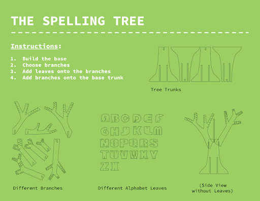
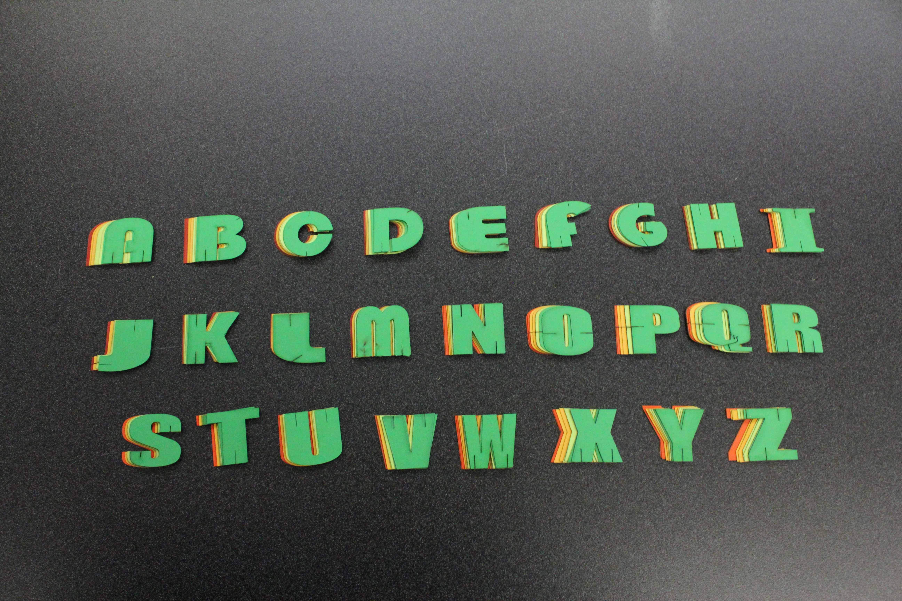

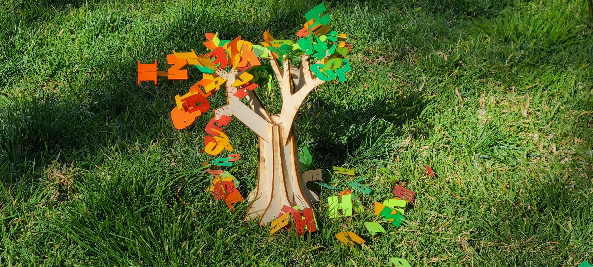
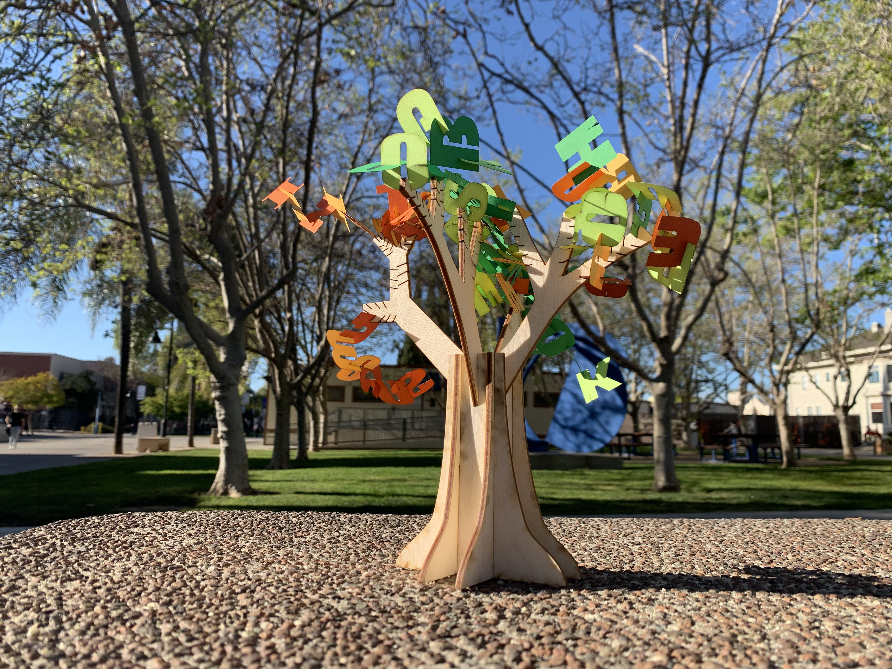
The Spelling Tree, Illustrator, February 2022
This is the final outcome of our project! Our concept was inspired by a
bonsai and fluxus score art. Fluxus score art is basically a performance
in which the audience become the performers and engage in the activity.
The leaves are letters that the audience can create words. The letters have
slots so they can be attached to other letters to make a word. These words
can be fit into notches within the branches. My group and I wanted the
participants to imbue their own meaning into the tree. Each of us had
individual tasks, such as completing our designs through illustrator and
meeting up to put our pieces together. The greatest challenge was the notches,
some of them locked better than others despite having relatively the same
thickness and style of cuts. It was either a little tight or a little loose,
but still locked nonetheless. During our final cut, a branch or two broke off
because the notches were a little too close so if I had the chance to do better
I would rethink the proximity of the notches and how deep I wanted it to be.
But overall, I am very proud of my group and the outcome of our project!
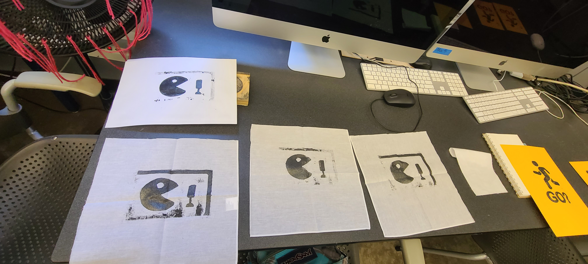
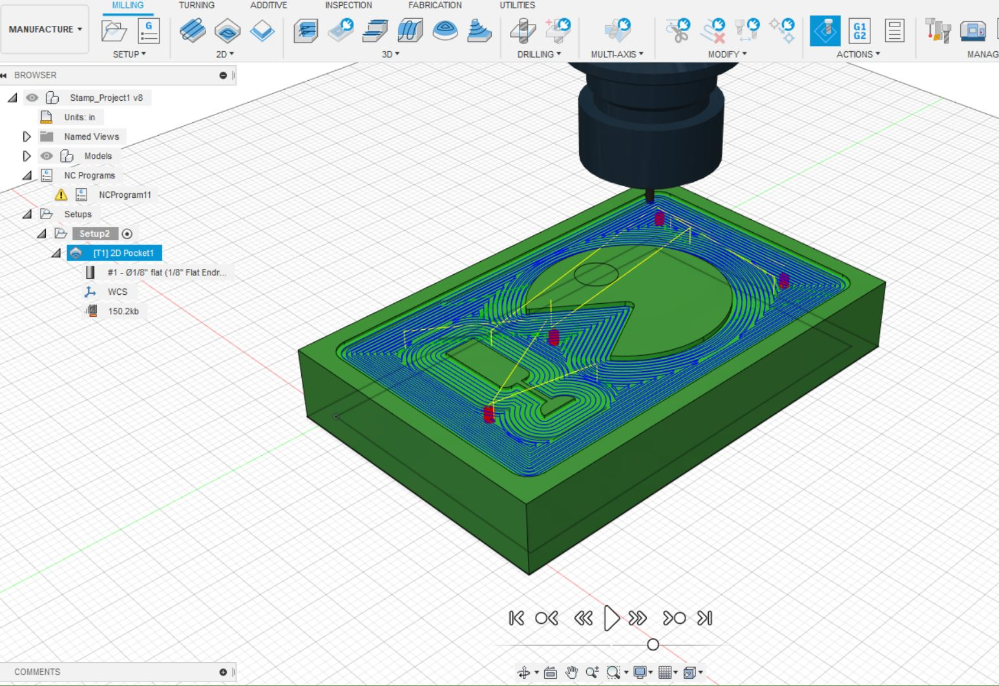
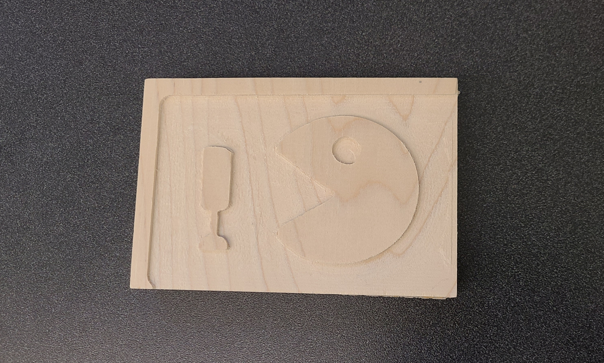
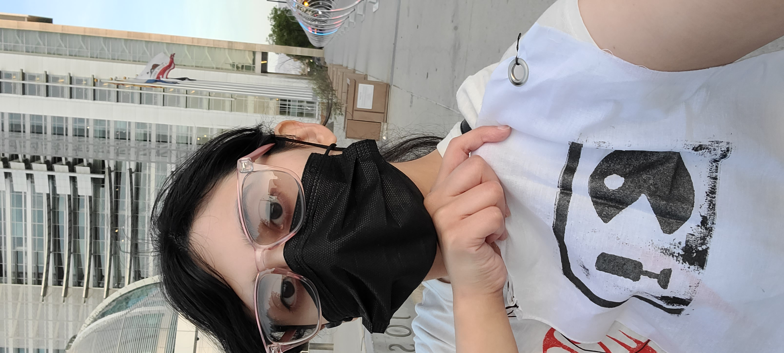
Mini Boss Stamp, Fusion 360, May 2022
The drafting phase was fun, but also very challenging because of the process with
the amount of time we had to work with. I felt that my first designs, which are
pictured here, were weak and not visually appealing. It was challenging trying to
create the design for the sign and trying to match it well with the locations.
But I liked how the project pushed me to communicate visually about my
surroundings and how people understand symbols associated with locations.
This projects helped me to learn how to design signs as a means of visual
communication and how this information serves a purpose when representing
specific areas or actions. I used Adobe Illustrator to create the svg and
Fusion 360 create the 3D model, and the x-carve machine to carve my design into
my block. My greatest challenge was creating designs for my final stamp and signs
and accurately measuring the size of my stamp block. Without the proper measurements,
the proportions of my stamp design was significantly enlarged, resulting in
ruined carving. However, the second time I was more successful. Overall, the first
and second phase of this project was the most stressful. The final phase with
the printing and putting it around downtown San Jose was more fun and gave me the
opportunity to explore more of the city during different times of day.
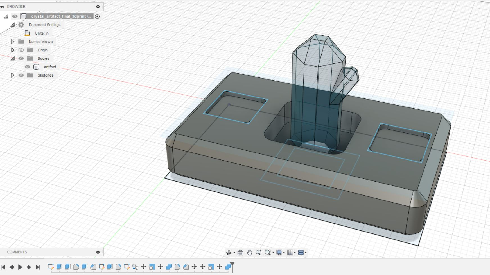
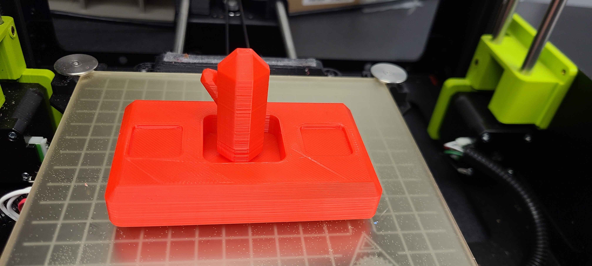
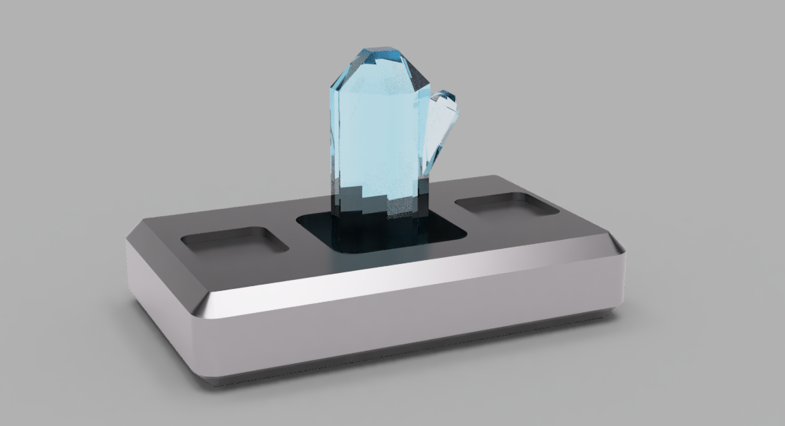
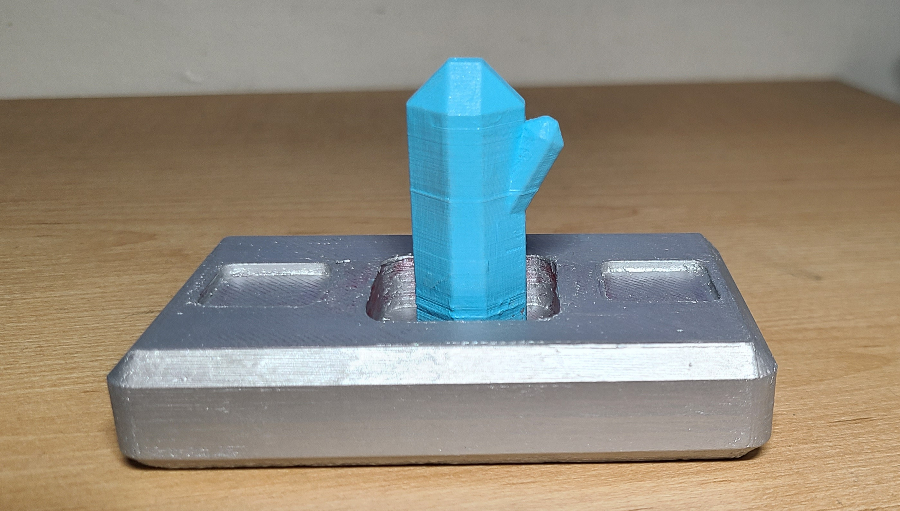
Transference Crystal, Fusion 360, May 2022
Story
What if technology advanced significantly and we discovered a new element of
crystal with qualities of switching traits?
The main idea behind this concept is that America, in the year 4900, discovers
a new element with the ability to exchange personality traits or skills. The
element was named “transphorite” because of it’s attributes. It divides up a
person’s inner self, like a physical element, and that component can be distributed
to another individual. Scientists and engineers have developed specific technology
to improve this process and experience called a reader. The reader activates
when a crystal is inserted in the center and two users put one of their fingers
into the scanner. Then they can proceed to swap skills or traits. Now
they can with the newly founded transerference crystal. They can hone their skills or develop
traits and trade it with others. An example would be, someone working as a cop
can suddenly become a professional painter by swapping skills with an experienced
artist. With this technology, people can better contribute to society and society
will become stronger and more peaceful because through this process of sharing.
We can become a more advanced civilization through this way of enhancement…or so
they thought. Almost 100 years later, society has had to rebuild itself back to
where it was before anyone made the discovery. The transerference crystal led to corruption and
power struggles. Despite it becoming more accessible to everyone after 50 years,
the rich abused it in an attempt to create the “perfect” specimen as if it became
an addiction. You know what they say, people will always want what they can have,
except at that time they could and no one could stop them. In the year 5050, we
value hard work and tradition so that we do not make the same mistakes of taking
shortcuts and repeating history. For our sake and yours, embrace your uniqueness
and willingness to learn.